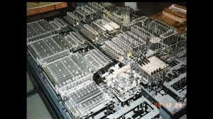

Lo Z1
Nel 1939 Konrad Zuse (1910-1995) costruì lo Z1, primo di una
innovativa serie di calcolatori elettromeccanici basati sul sistema binario
e programmabili, funzionanti prima a memorie elettromeccaniche e poi
a relè (Z2, Z3). La macchina presentava una struttura già del tutto analoga
a quella dei computer moderni, con la distinzione tra unità di memoria ed unità
di calcolo, e funzionava alla velocità di clock di un solo Hertz, generata da
un motore elettrico. Gli studi di Zuse e quelli di John Vincent Atanasoff,
inventore della memoria rigenerativa, furono la base principale per
l'elaborazione dell'architettura di von Neumann. Il convegno internazionale
di Informatica del 1998 riconobbe a Konrad Zuse con il suo "Z1" il ruolo di
inventore del primo computer programmabile funzionante della storia.
